综合、实现和上板
写完功能代码、仿真通过后，就可以上板验证了。很多同学跳过仿真直接上板，对于小规模项目问题不大，但是一个很不好的习惯。
1、RTL分析¶
行为仿真之后，可以进行RTL分析（RTL Analysis），查看所写的代码描述的电路是否符合自己的预期。RTL分析是将HDL语言转化成逻辑电路图的过程，与底层所用的FPGA芯片无关。
按下图所示，点击Open Elaborated Design 运行RTL分析，可以得到的Verilog代码对应的RTL级原理图（Schematic）。如果已经运行过RTL分析，代码了做改动后，查看RTL分析后的原理图时会在工具栏下提示reload。
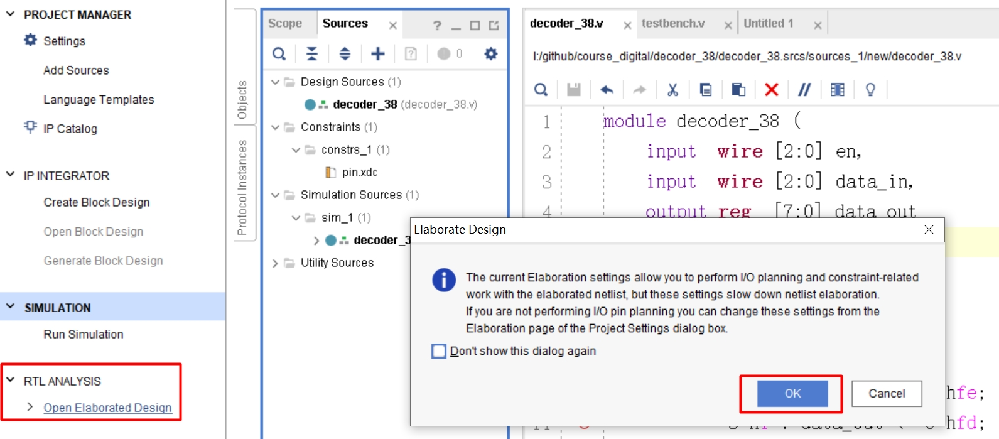
通过生成的电路图可以看出，所实现的3-8译码器主要包括一个RTL_ROM模块和RTL_MUX模块，RTL_ROM模块对输入进行译码，实现了3-8译码器的核心功能，具体内部怎么实现的可在综合之后进一步查看， RTL_MUX模块根据使能信号进行输出选择。
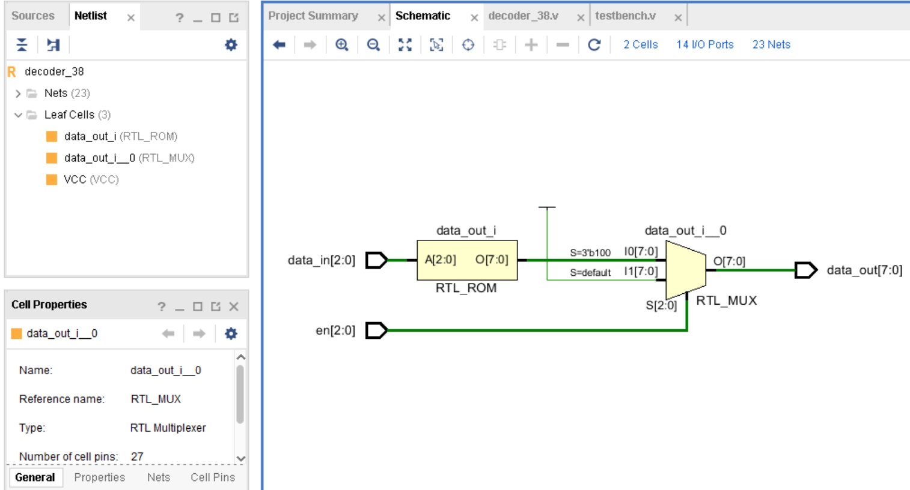
RTL分析这一步是可选的，不影响比特流的生成，但对于debug很有帮助。往年很多同学仿真通过了，下板后没有任何现象，因为代码不规范，得到的RTL图却不符合预期，可能会出现引脚悬空的现象，最终下板的现象不对。
2、综合（synthesis）¶
综合是将高级抽象层次的语言描述转化成较低层次的电路结构，即将verilog代码映射为门级网表（与非门等基本逻辑单元的互联关系）。 综合的过程有翻译、映射、优化，翻译是将代码转成基本的与或非等器件无关的逻辑电路；映射将逻辑电路映射成基本单元，FPGA开发则映射为底层的LUT、D触发器等资源，而芯片开发则是基本的库元件；优化包括去除冗余的电路结构，或者复用功能相同的电路结构。
综合后生成的门级网表只是表示了门与门之间的虚拟的连接关系（逻辑连接），并没有规定门的位置、走线等。
先按下图左侧红框中所示进行综合。
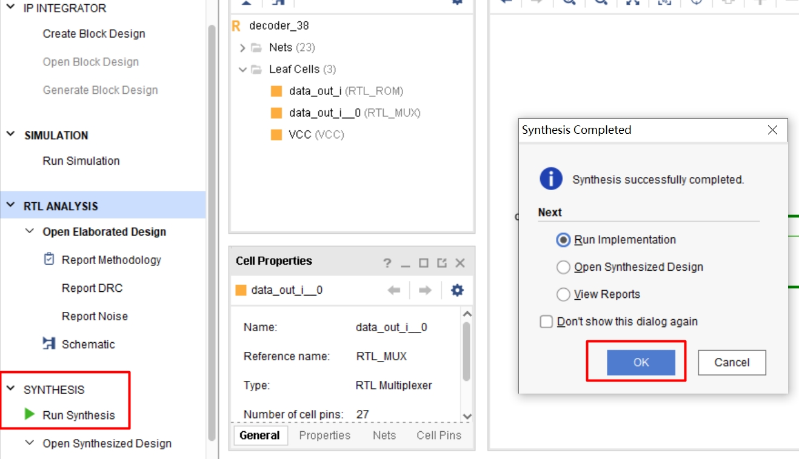
综合、实现、生成比特流一般耗时较长，项目越大所需的时间越长，运行过程中会在右上角进行提升，右上角会显示Running synth_design同时在转圈，说明正在综合。
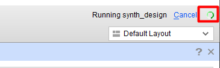
综合完成后右上角会提示Synthesis Complete，并且会弹出上图右侧红框的弹框让选择下一步的操作。 默认第一个选项是进行下一步操作即Implementation，第二、三个选项是查看综合后的情况，这里通常选择Run Implementation或者选择下面的Cancel。选择Cancel，然后按下图所示打开综合后的电路图，可以看到更加具体的实现，与RTL电路图不同的是，综合后的原理图中电路已经被映射到FPGA的查找表（LUT）、输入输出缓冲（IBUF、OBUF） 中，并且经过了综合器的优化。输入输出缓冲是FPGA IO口默认添加的，主要是电气方面的考虑，不影响逻辑关系。 LUT、IBUF、OBUF的详细介绍可以查看xilink手册。
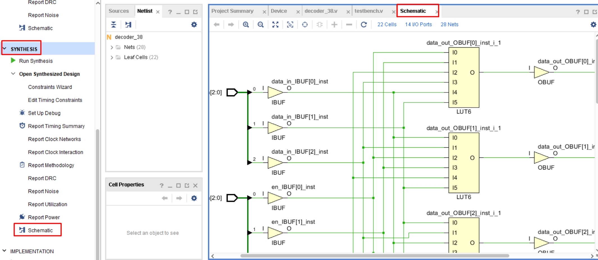
Rtl_analysis的schematic和synthesis的schematic的区别
RTL ANALYSIS的Schematic可以比较接直观的反应HDL逻辑，用逻辑门、加法器、计数器、选择器、触发器等门级电路或者常用的基本器件，并尽量使用代码中的变量名表示，会做适当的优化，清晰地和代码对应。
SYNTHESIS的Schematic，SYNTHESIS后的Schematic是综合工具根据你选的器件和综合优化策略后综合得到的逻辑设计表示，使用基本单元和网络实现功能、包含了较多的LUT、CARRY、FF、I/O buffers等。
3、实现(implementation)¶
综合后生成的门级网表只是表示了门与门之间的虚拟的连接关系（逻辑连接），并没有规定门的位置、走线等。Implementation则是将门级网表转化为布局布线后的版图，包括布局和布线两步。布局，把综合后的基本单元放到器件的各个位置，布线，把各个单元连接起来。布局布线需要考虑是时序优先、资源优先（面积）、功耗优先。
在Flow Navigator 中点击Implementation ->Run Implementation 进行实现。实现同样需要一定的时间，在右上角会显示进度。实现完后出现下图。这里我们选择cancel取消下一步的动作，也可以选择第二项生成比特流文件。
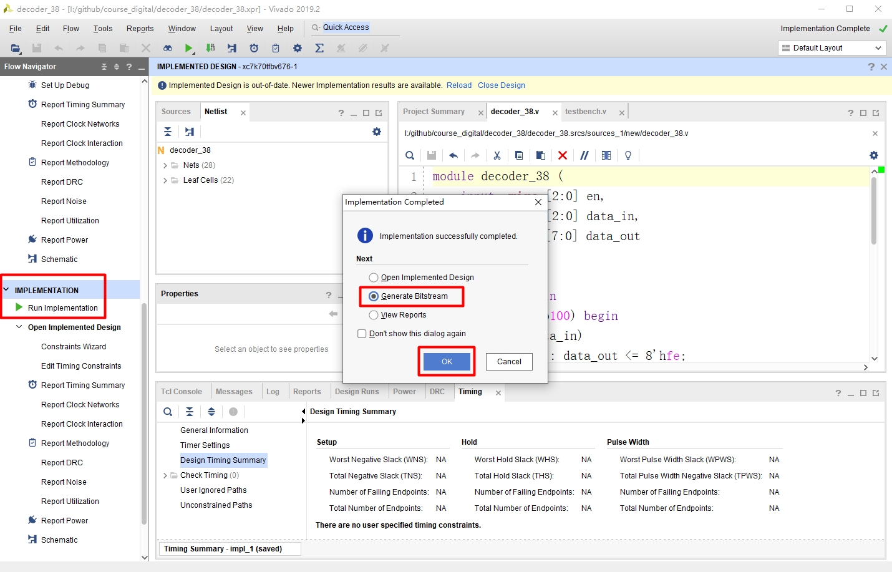
4、生成比特流(generate bitstream)¶
比特流.bit文件，用于配置FPGA进行上板操作。按下图所示在Flow Navigator 中点击Generate Bitstream执行操作。
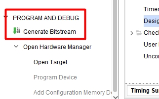
总结
生成比特流步骤是先综合、再实现、最后生成比特流，可以依次点击流程操作栏里的Run Synthesis -> Run Implementation -> Generate Bitstream，也可以直接点击Generate Bitstream会自动执行综合、实现。
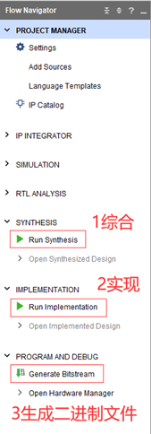
综合、实现、生成比特流会让选择用到的CPU核数，选择最大的，会缩短运行时间。
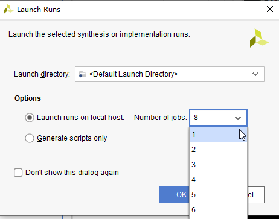
5、错误信息查看¶
编码过程中往往会出现各种错误，仿真、综合后如果提示失败则首先查看message窗口和旁边的Tcl Console窗口的信息，如果有错误，会提示出错的地方，如下图。
如果有语法错误，会有红色的波浪线提示，鼠标放过去，会显示具体的文字信息。但vivado的语法错误提示不够准确，红色波浪线所在的行不一定有语法错误，可能是前后行有语法问题。
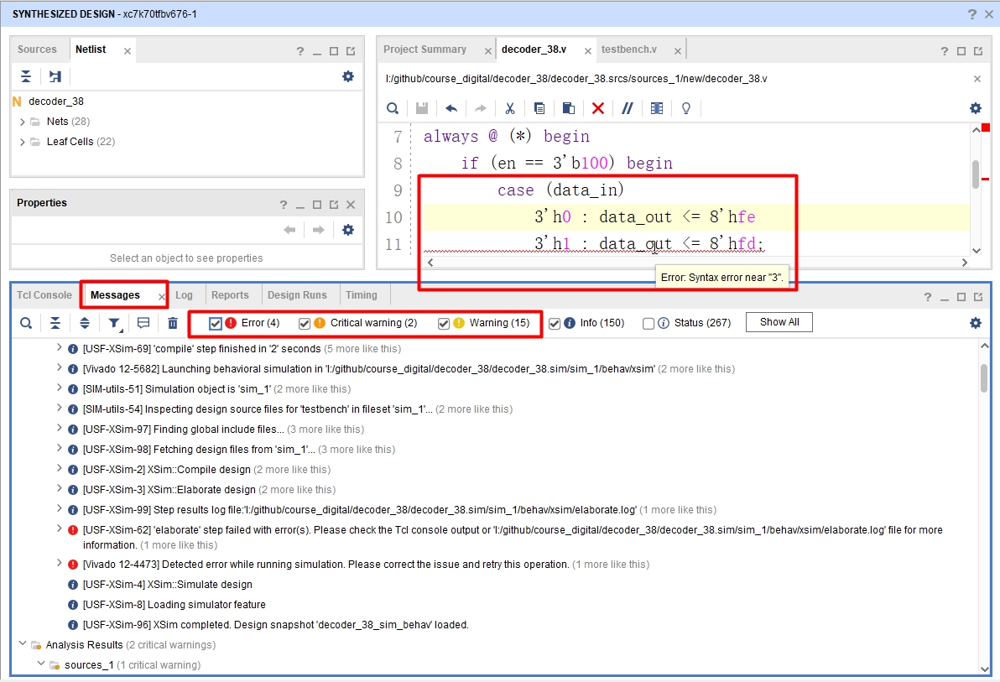
重点关注是否有Errors和Critical Warnings。（1）Errors意味失败，无法走后续的流程。
（2）Critical Warnings表示所设计的电路中存在潜在的不确定性或其他会引起电路不能正确运行的非语法因素；
（3）Warnings是较为次要的警告，一般可以忽略，若电路不能综合/实现/生成比特流，则也要检查Warnings，并在必要时重新建立工程。
仿真综合结果不一致
如果编码不规范，经常会出现仿真通过但是上板不过，或仿真通过但是综合的时候报错，或者仿真不过上板通过，即仿真和综合结果不一致。
这是因为Verilog语义是针对“仿真”的，没有定义“综合”相关的语义，使得仿真器和综合器对小部分语句的处理不一样，Verilog所有的语法中能被综合成电路的只有很小一部分， 而哪部分语句能被综合是没有标准的，取决于综合器的实现，不同厂家的综合器实现不一样，不同厂家的Verilog规范也不完全相同。要避免仿真和综合不一致的有效方法就是遵从Verilog规范编码。
6、上板¶
点击流程操作栏里的Open Hardware Manager
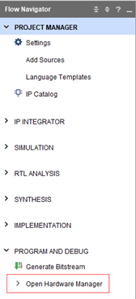
点击Open target，选择Auto Connect；
（注意：此时开发板应处于连接且电源开关打开）。
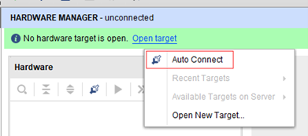
右击xc7a100t_0，选择Program Device；
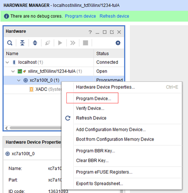
选择实现后生成的decoder_38.bit二进制文件，然后点击Program，烧录到FPGA中；
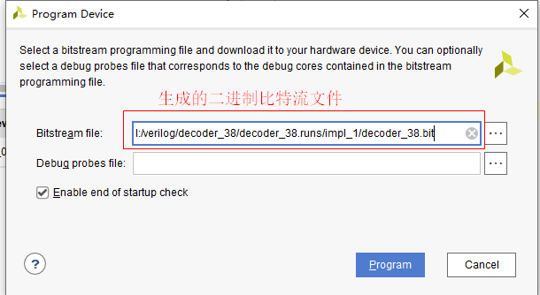
烧录成功后，开发板通常会响一声。然后通过操作验证电路是否正常工作，对于3-8译码器，改变输入， 观察输出是否按照预期变化。预期的现象是，拨动对应的拨码开关（需要查看约束文件找到对应的开关），Led灯会变化。